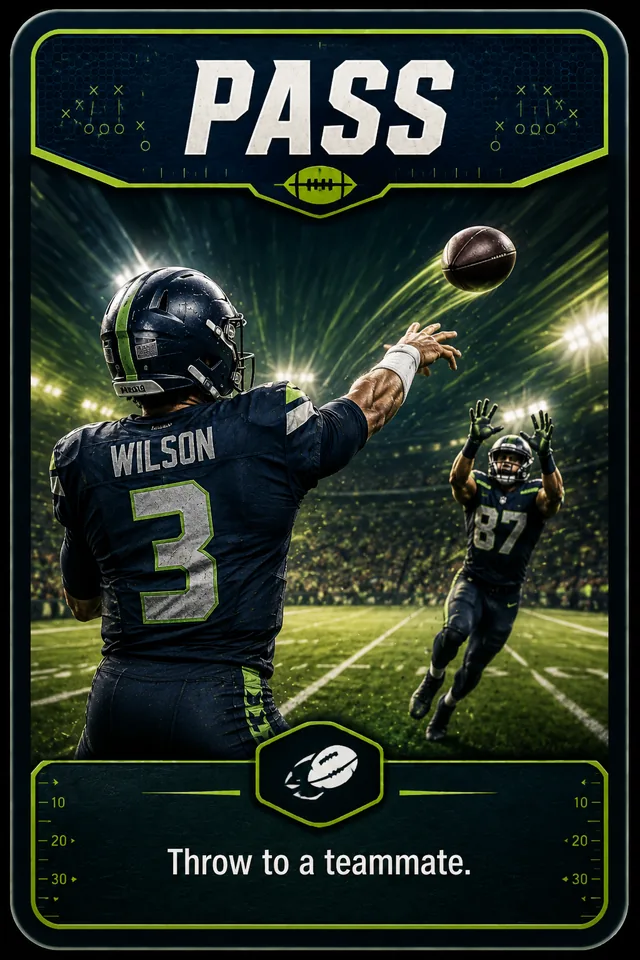
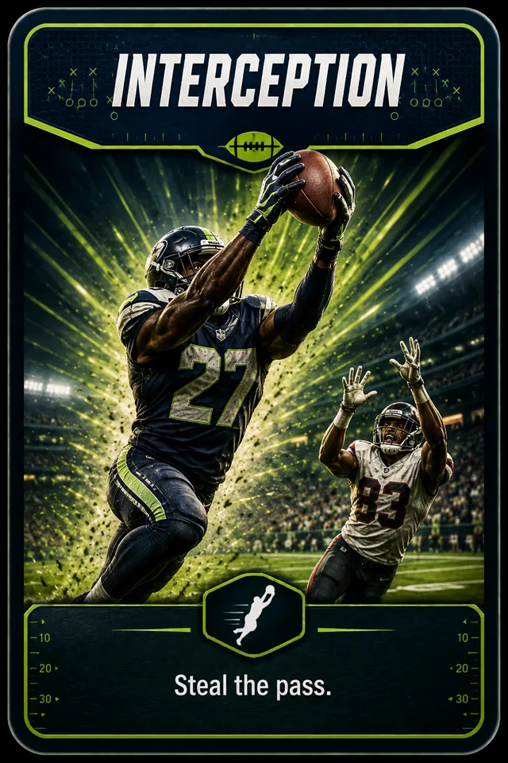

RUN
Offense: the ball carrier runs the football. If this Play succeeds, advance 10 yards; the Football Card stays with the same player. Defended by: TACKLE or BREAK THROUGH. Some Role and Magic abilities alter this result.
Start with the tabletop setup, learn every Action Card and defensive response, then explore all 20 Magic Cards and 10 animal identities. After four quarters, the team with the highest score wins.
Five card types, one mat, two team markers, and one football card.
Separate all the cards into five groups. Keep them in their own piles throughout setup:
Unfold the game mat on the table. It tracks both teams' position on the football field. Take out the red miniature football (Red Team) and blue miniature football (Blue Team). Place both team markers at the 50 | 50 midfield starting position. The miniature footballs show team positions; they are not the Football Card used for possession.
Talk with the other players and decide who plays together. Even teams can be 1v1, 2v2, 3v3, or 4v4. With an odd number of players, both sides may mutually agree to an uneven matchup, such as 1v2, 2v3, 3v4, or 4v5. Uneven teams are a player choice, not a requirement. Decide which side is Red and which side is Blue.
Keep Scoring Cards where players on both teams can reach them. There is only one Football Card; put it in the middle of the table for now. Keep the five card types separate when dealing.
Deal before Quarter 1. Every player receives the same Action Card count.
Shuffle all 20 unique Magic Cards. Deal 2 Magic Cards to every player for the entire game. Place all remaining Magic Cards face down to one side and leave them out of the game. Each Magic Card is single-use; a player may use both in the same quarter or save them. There is no per-quarter Magic limit.
Shuffle the Action Cards. Deal exactly 7 Action Cards to EVERY player at the beginning of EVERY quarter, regardless of team size: 1v1, 2v2, 3v3, 4v4, or a mutually agreed uneven matchup. Place the undealt Action Cards face down to one side, ready for effects that explicitly let players draw. Do not draw automatically after playing a card.
Shuffle the 10 different Animal Role Cards. Deal one animal per player before the game starts. Each animal has its own special ability; animals have no assigned team color. Put leftover Animal Role Cards face down to one side, out of play.
Keep Scoring Cards within reach of both teams to record points as they score. Leave the single Football Card at the center until starting possession is decided. The red and blue miniature footballs remain at 50 | 50 until the field position changes.
Each team chooses one player to roll. Before either player rolls, both teams agree whether the higher number or the lower number wins. Then roll and compare. The winning team takes the Football Card and decides which of its players holds it to start the first Play. Whoever holds the Football Card acts first.
If both sides roll the same number, roll again to break the tie (standard suggested tie procedure).
First resolve the stronger effects; then the normal football action.
Only the current Football Card holder starts the offense by playing RUN or PASS. Before a new Play, a teammate may receive possession if the current carrier has no attack card and the teammate does. An ordinary Play consists of one offensive action followed by its permitted defensive responses and final result.
When card effects compete, check and resolve them in this order: Magic Cards first, then Animal Role abilities, then ordinary Action Cards. This is effect priority, not a rule forcing players to spend all Magic Cards before anyone plays RUN/PASS. A Magic Card may be used at its own legal trigger, including in response to an Action Card. A Magic Card that specifically counters another Magic Card still works as written.
One Play: the setup just before one RUN/PASS, that offensive Action Card, all reactions, and final resolution. One Quarter: one period of dealing and playing Action Cards until both teams run out of usable attacks. One Game: four quarters, with cumulative points deciding the winner.
When a skill has a limit, the use is spent as soon as the player announces it, even if the play later fails. For example, WOLF can give or take a card from a teammate once per Play, before the offense starts RUN or PASS. That is not once for each individual card in the defense chain.
The offense begins a Play; the defense reacts and both teams may respond.
Offense: the ball carrier runs the football. If this Play succeeds, advance 10 yards; the Football Card stays with the same player. Defended by: TACKLE or BREAK THROUGH. Some Role and Magic abilities alter this result.

Offense: choose a teammate as the receiver. If the Play succeeds, advance 10 yards and give the Football Card to that teammate. Defended by: INTERCEPTION or BREAK THROUGH. A successful INTERCEPTION gives the ball to the defender.

Defense versus RUN: stop the runner, preventing any yards gained. A normal TACKLE can be canceled by the attacking side's BLOCK, unless the defending player is BEAR using its stronger defense.

Defense versus PASS: intercept the pass and take possession of the Football Card. A normal INTERCEPTION can be canceled by BLOCK. If the interception stands, the defense becomes the new offense, starting first down.

Offensive response: cancel an opposing TACKLE or INTERCEPTION so the original RUN/PASS can succeed, unless another defense applies. BEAR exception: if BEAR personally played TACKLE or INTERCEPTION with its skill active, opponents need two BLOCK cards to cancel it.

Defense: stop an opponent's RUN or PASS directly, or play it after the attacking side has used BLOCK to restore the final defense. If it stands at resolution, the offense gains no yards. Unlike INTERCEPTION, it does not steal the ball by itself.
Move the colored miniature football markers as the teams advance.
A team has four downs to advance at least 10 yards. A successful normal RUN or PASS moves 10 yards and resets to first down. A stopped Play gains no yards and consumes a down. A failed fourth down turns over possession at the current spot. Mark field progress on the mat using your team's colored miniature football. Special 20-yard gains cannot skip the last 10-yard position: finish a Play from there to score.
Successfully enter the opponent's end zone to score 6 points. Take the appropriate Scoring Cards to record those points. The scoring team may then attempt an extra-point kick (+1). After the attempt, the opponent receives the Football Card and begins a new first down from its own 30-yard line.
At the opponent's 40-, 30-, 20- or 10-yard line, the team with possession may attempt a field goal before a new Play. Roll two six-sided dice; a successful kick scores 3 points. On a made kick, the opponent starts a drive from its own 30. A missed kick changes possession at the kick spot (or the opponent's own 20 if the spot is inside its 10).
For an extra point, a two-dice total of 3+ succeeds. A field goal from the opponent's 10-yard line: 3+; 20: 4+; 30: 5+; 40: 6+. Magic effects such as GOAL SHIFT or GALE FORCE may still prevent a kick from scoring.
The offense can choose to PUNT on fourth down, or when no RUN/PASS cards remain. A punt moves the ball 40 yards toward the opposing end zone and gives the Football Card to the other team; a punt into the opponent's end zone becomes a touchback at its own 20. In field-goal range, the offense may choose a kick instead.
There is no clock timer. Keep playing until both teams have no usable RUN or PASS Action Cards, and complete any Play already started. If just one team is out of attack cards, the other team may still attack. Each quarter begins with a fresh deal of 7 Action Cards to every player.
Collect the Action Cards, reshuffle, and deal 7 to each player. Scores, animal identities, unused Magic Cards and previously spent once-per-game Role Skills remain unchanged. Quarter-limited Role uses refresh; quarter-long Magic effects expire. Between Q1/Q2 and Q3/Q4, preserve the current ball situation unless your agreed kickoff rule requires a new drive.
One game has exactly four quarters. Add up all touchdowns (6), successful extra points (+1), and field goals (3) using the Scoring Cards. The team with the higher total score after Quarter 4 wins. A tied game remains tied unless players agree on a tiebreaker.
20 unique effects. Every Magic Card is one-use only, and you decide when to cast it as long as its trigger is legal. No per-quarter Magic limit.
Showing all 30 cards.
During this play, no animal except the caster may play Action Cards. This includes the caster's teammates. Magic Cards are unaffected.
When an opponent attempts a field goal or extra point, move the goalposts so the kick misses.
Fly directly to the goalposts for a field-goal attempt. You cannot score a touchdown with FLIGHT. Ordinary Action Cards cannot stop the flight; the kick still needs a successful roll. GRAVITY cancels it.
Cancel FLIGHT. If no FLIGHT is being played, any RUN or PASS this play requires two matching Action Cards to take effect.
The current offensive play fails, unless SHATTER is used to destroy the barrier.
Destroy MAGIC BARRIER or INVINCIBILITY. If neither is active, cancel the effect of one opposing Action Card.
Return to the beginning of the current Play, including its starting ball position, possession and down. May be used right after a touchdown or field goal, before the next Play starts. Scores stay unchanged. Hands, the Action Deck and already spent cards do NOT reset. Whether replaying a scored play grants additional points is still under discussion.
Your next offensive play cannot be defended by opponents. SHATTER can cancel this Magic Card.
Play PASS and choose a receiver. Secretly choose left or right. If the defense guesses wrong, the pass succeeds for 20 yards; if it guesses correctly, the pass fails. TRUE SIGHT can reveal the trick.
Counter PHANTOM PASS, or look at two cards from an opponent's hand. Any player who uses TRUE SIGHT this quarter can also see and defend the ball carrier protected by INVISIBILITY.
Subtract 5 from an opponent's field-goal or extra-point dice total. SUPER STRENGTH cancels this wind.
Cancel GALE FORCE, or empower your RUN so opponents need two TACKLE cards to stop it.
Choose one of YOUR OWN teammates. That teammate leaves the field for the rest of the quarter and gives all their Action Cards to teammates who remain in play. They cannot use their unused Magic Cards while off the field. They return next quarter. GUARDIAN cancels CHAOS.
Steal one Action Card from each opposing player. Magic Cards and Role Cards cannot be stolen. GUARDIAN can prevent the theft.
One-use passive Magic Card. When CHAOS or PICKPOCKET would take effect, GUARDIAN cancels it and is permanently consumed. There is no per-quarter Magic limit.
Choose an ally or opponent and immediately copy one of that player's unused Magic Cards. A previously used Magic Card cannot be copied; the original card remains with its owner.
Exchange one unused Magic Card you hold with one unused Magic Card held by another player, whether teammate or opponent.
Cast only while carrying the football. The animal is invisible for this entire quarter. As long as that animal keeps carrying the still-invisible ball, consecutive RUN plays cannot be defended with ordinary Action Cards unless a defender used TRUE SIGHT this quarter. Once the ball is PASSED, it becomes visible permanently, even if the original carrier gets it back. The animal stays invisible until quarter's end.
For the rest of this quarter, every player except the caster rolls a six-sided die whenever playing an Action Card or activating an Animal Role Skill. A roll of 1–3 fails (the Action Card is discarded or the limited Role use is spent); 4–6 succeeds. Magic Cards are entirely exempt.
Every player shuffles their Action Cards back into the shared Action Deck, then draws exactly as many Action Cards as they held before. Magic Cards and Role Cards are unchanged.
Any team can draw any animal. Skills are different for every character.
Once per quarter, discard one card from your hand to steal one Action Card from any player. You can never steal Magic Cards or Animal Role Cards. Declaring the skill uses up this quarter's activation even if it later fails.
Playtest limit: once per quarter, declare SPEED BURST when playing RUN. If the RUN succeeds, gain 20 yards instead of 10 (subject to the final 10-yard line). The use is spent when declared, even if the RUN fails. Earlier unlimited use is under balance review.
Whenever YOU play PASS, an opponent who plays INTERCEPTION must roll one die: 1–3 the interception fails; 4–6 it can succeed. At most once during each Play; if ROLL OF FATE is also active, resolve both applicable rolls.
Proposed skill — once per quarter, when YOU attempt a field goal or extra point, you may reroll one die and must keep its new result. The use is spent once declared.
Once per quarter, when you play RUN, discard one extra card to make that RUN immune to ordinary Action Card defense. A Magic Card may still counter it. Declaring the skill spends its use.
Proposed skill — ONCE PER GAME, you and every teammate still on the field may each draw one Action Card from the shared deck. Announcing the skill spends its game-long use.
When YOU personally play TACKLE or INTERCEPTION, the offense must play two BLOCK cards to cancel that defense. This does not extend to your teammates' cards. A once-per-quarter cap has been proposed for balance testing but is not yet confirmed.
Once per Play, BEFORE the offense plays RUN or PASS, give one card from your hand to a teammate or take one card from a teammate. This can be done when your team is attacking or defending. A Play includes the offensive card and all defensive responses—not each individual card.
Proposed skill — once per quarter, before the next Play starts, draw one Action Card from the shared deck. Announcing the skill spends the use, even if the card cannot be drawn.
You may play a PASS card as RUN instead; resolve it as a RUN, including the normal RUN defense rules.
Still to finalize: Action Deck card quantities (4v5 requires at least 63 Action Cards before bonus draws); PASS receiving rules in 1v1 without teammates; whether a REWIND replay may score again; the halftime opening possession rule; Role-skill limits for RABBIT and BEAR; and the suggested EAGLE, LION and CAT skills. These have not been silently treated as finalized.